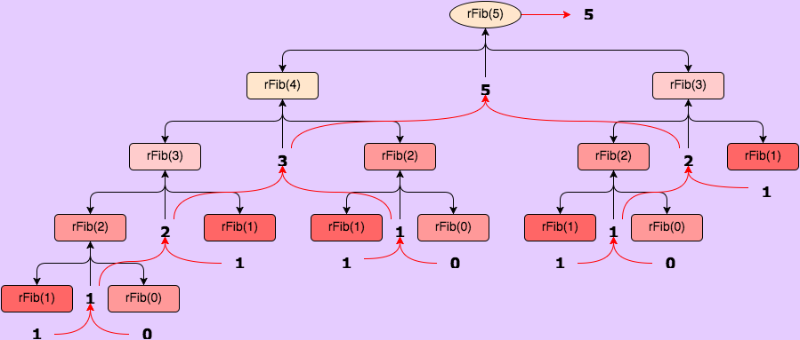
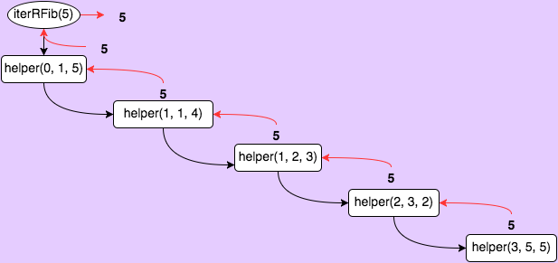
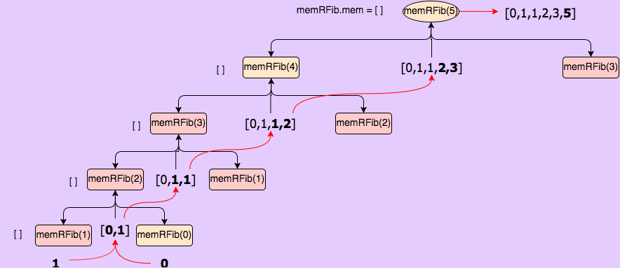
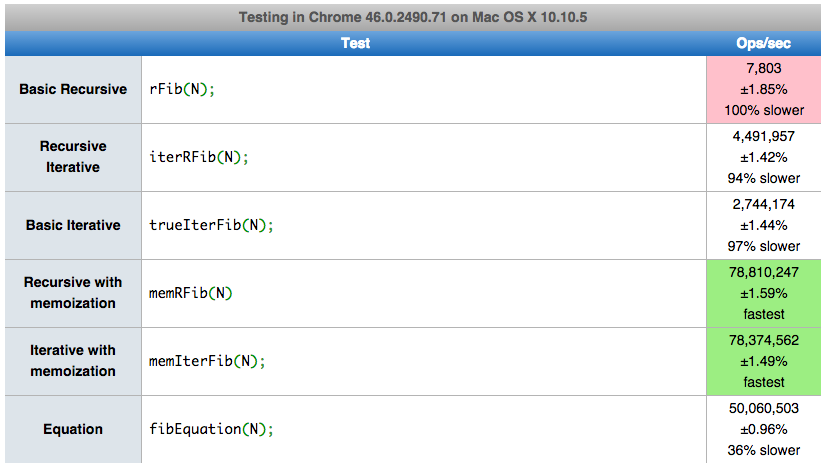

Analyzing nth Fibonacci Solutions
javascript recursionCalculating the Fibonacci sequence is one of the first programs many people learn to write once they’re past Hello World. Of course, there are many ways of solving this problem; for example, it can be solved iteratively, or recursively. I was curious if my intuitive expectations about the performance of a few different methods were correct, so I wrote five different programs that all return the nth Fibonacci number and put them to the test.
I first tested each function by running it in node, passing in increasing values of n until a) it took so long to return I lost patience, or b) the max call size was reached. FYI, I used my 2013 Mac with an i7 processor running Yosemite.
Basic Recursion
First up, I tried out a basic recursive function. Notice how simple this functions is (only one line!)–it reads almost the same as the definition of the sequence: The next value in the sequence is found by summing the previous two values–except for when n = 0 and n = 1; these values are equal to n.
Unfortunately, this simple program can only handle small values of n. When n = 45, it average 21.5s before returning. I ran out of patience trying to test it for values greater than 45. This makes sense, as this program has a time complexity of O(2n)–not good. Incidentally, it has a space complexity of O(n). Also, notice in the figure below how many redundant computations this methods uses! Blech. We can do better.

Iterative Recursion
Next up, let’s check out an iterative approach that uses recursion to iterate (this is quite a bit different than the approach above). This time, we’re using a recursive helper function that allows us to iterate n times, passing in the previous two values and decrementing n each time. We return the last value when n === 0.
//Iterative by recursion
var iterRFib = function(n){
var helper = function(a, b, n){
return n<2? b : helper(b, a+b, n-1);
};
return helper(0, 1, n);
};We get a big performance jump using this approach. I got up to n = 13974 before reaching the max call size, and the function still returned in less than 0.1s. This time our time complexity is just O(n). Our space complexity is still O(n), as we must store each call to helper in our stack. This is why this function performs so much more quickly, but still runs into the call stack max.

True Iteration
Unlike the approach above, the approach using JavaScript’s built in loop functionality does not rely on any recursive calls, and there for does not need to store all previous calls in memory. The code below stores the previous two values in an array (note, this could have been done in two separate variables as well), then enters a for loop that decrements from n to n === 2. Inside of the loop, we are setting the second value to the sum of the previous two values, and the first value to the previous second value. When n === 1, we exit the loop and return the second value.
//Truly iterative
var trueIterFib = function(n){
var cache = [0, 1];
for (n; n>1; n--){
cache[2] = cache[1];
cache[1] += cache[0];
cache[0] = cache[2];
}
return cache[n];
};Like the iterative recursion approach, this function performs small(ish) numbers blazingly fast compared to the true recursive approach (trueIterFib(14000) took less than 0.1s). However, it can also handle extremely large values without hitting the max call stack, because it has a space complexity of O(1)—it only needs to store the last two values at any given time, leaving a much smaller footprint. I was able to calculate the value of n = 1000000000 using the function with no problems–it took 4.2s though, which makes sense given that the time complexity is O(n).
This is the clear winner so far in terms of performance: O(n) time complexity and O(1) space complexity. But for argument’s sake, let’s say you were to write a program that repeatedly calcualted large Fibonnaci numbers. Even our trueIterFib function would prove unweildy for this situation. This is where memoization comes in.
Recursion with memoization
Let’s return to our original recursive solution, but add on three key lines of code. This time, we’re attaching the property memRFib to our function object, which we will use to cache previously computed values. This will allow us to “trim” a bunch of branches off of the recursion tree represented above. When we enter our function, we first check to see if we already have the value for n stored in our cache (memRFib); if we do, we simply return it. Otherwise, we enter our recursion the same as before, but store the results in the cache instead of returning them. Finally, we return the value of memRFib.mem[n].
//Recursive with memoization
var memRFib = function(n){
if (!memRFib.mem[n]){
memRFib.mem[n] = n<2 ? n : memRFib(n-1) + memRFib(n-2);
}
return memRFib.mem[n];
};
memRFib.mem = [];Although we are still using recursion, both our time and space complexities are now O(n). The function must only calculate the value for each n once, which gives us a huge speed boost. Interestingly, we have the same space and time complexity as our iterative recursive strategy, and the performance of the two functions is almost identical (big asterisk asterisk!!! see below): I was able to calculate the value for n = 13962 before hitting the max call stack, and it took less than 0.1s. I would imagine that the small decrease in performance is likely due to the fact that we must store both the function calls and the memRFib.mem array here.

Another interesting thing about this function is that while it will run into call stack issues if you try a large number at the beginning, once you’ve memoized, the limit increases. This means that theoretically the call stack max could be avoided with clever function calls.
Iteration with memoization
Alright, so how about we do something similar with our truly iterative function–it had the best performance before, will this improve it even more?
As with the recursion with memoization, here we add a property with which to store our results. We then check to see if we have already calculation the value, and if so, return that value. Otherwise, we enter our for loop, where we do something a bit more curious. We check again to see if the value has already been calculated before doing so. I’ll leave it to you to figure out why.
//Iterative memoization
var memIterFib = function(n){
if (!memIterFib.mem[n]){
for (var i = 2; i <=n; i++) {
if (!memIterFib.mem[i]){
memIterFib.mem[i] = memIterFib.mem[i-1] + memIterFib.mem[i-2];
}
}
}
return memIterFib.mem[n];
};
memIterFib.mem = [0, 1];Notably, thought we don’t run into any call stack errors, this version of our function actually performs much more slowly than the trueIter function. It took 4.2s to calculate the value of n = 17000000; I’m guessing this is because of the addition of the conditionals and lookups in this function. Additionally, while trueIter has a space complexity of O(1), this version has a space complexity of O(n) because we store all of our values in memIterFib.mem. So why on earth would we ever want to use this version? Keep reading for the answer.
Formula
Incidentally, there is also a formula one can use to calculate the nth Fibonnaci number:
an = (Phin - phin)/Sqrt(5)
where Phi = (1+Sqrt(5))/2 and phi = (1-Sqrt(5))/2
We can write this in code like so:
var fibEquation = function(n){
var Phi = (1 + Math.sqrt(5))/2;
var phi = (1 - Math.sqrt(5))/2;
return (Math.pow(Phi, n) - Math.pow(phi, n))/Math.sqrt(5);
};This option gives us O(1) for both the time and space complexity. Pretty sweet!
It was able to calculate the value when n = 100000000000000000 in less 0.1s (I didn’t bother testing anything larger than this).
Summing it all up
So far, our functions rank in the following order based on their space and time complexities, as well as their actual performance:
rFib < iterRFib ~ memRFib < memIterFib < trueIterFib
However, our tests have not taken into account situations in which you might want to repeatedly calculate various Fibonnaci numbers many times—this is where our memoized functions shine. To test this out, I modified this online tool and got the follow results.

Whoa! A few interesting things are happening here.
1.) As before, rFib performs significantly slower than the rest of our functions.
2.) trueIterFib and iterRFib are comparable in these tests. This is exactly what we would guess would happen, given that these tests only use n = 20; this is far below the maximum n I was able to test before hitting the call stack max for iterRFib.
3.) Both memoized functions vastly outperform the rest of the functions, and are almost identical in their outcomes.This is because as soon as we test n = 20 once, this value is stored in the cache, so the function simply looks up the previously calculated value on each successive test.
4.) Though still fast, the formula was actually significantly slower than the memoized functions. This is because even though this function has a time complexity of O(1), it still requires more calculations each time than the memoized versions do after they calculate the value once.
So what does this mean? Well, we should take into account both the worst and best case scenarios when considering space and time complexity and choosing which function is “best” for our needs.
| Approach | Best Case | Worst Case | Notes |
|---|---|---|---|
| Time Space | TimeSpace | ||
| Basic Recursion | O(2n) O(n) | O(2n) O(n) | Easy to read. Very resource intensive |
| Iterative Recursion | O(n) O(n) | O(n) O(n) | Uses a helper function Quick, but runs into call stack max |
| True Iteration | O(n) O(1) | O(n) O(1) | Quick, even with very large values |
| Recursion with Memoization | O(n) O(n) | O(1) O(n) | Quick, but can run into call stack max |
| Iteration with Memoization | O(n) O(n) | O(1) O(n) | Fast for previously memoized values |
| Formula | O(1) O(1) | O(1) O(1) | Extremely fast at calculating large values |
And that. Is that.